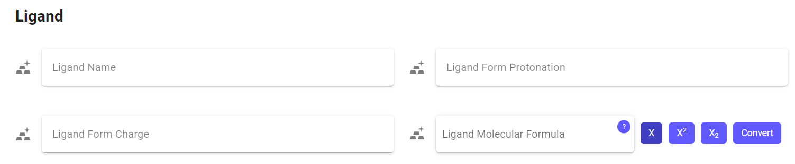

WRASCAL Front-end Design
| Design |
For more information, see the GitHub repository The Whitman Repository of Accepted Stability Constants of Aqueous Ligands (WRASCAL) is a chemistry database designed by Professor Nathan Boland. The database allows users to enter and access information about ligands, metals, and the conditions necessary to form coordination compounds. Four computer science students extended this work in their year-long senior capstone project. They updated the front- and back-end to make the information entry and access easier. One of the students, Luke Samuels, worked on the front-end for the “New Entry Submission” entry page when he found an opportunity for HCD. New entries needed molecular formulas for metals and ligands, but the database could only parse this information in an unfamiliar syntax. The initial website had no information about how users should write molecular formulas or tools for users to write in a more familiar syntax. Luke reached out to me, and we worked to redesign the front-end for the “New Entry Submission” page. This project had two sets of stakeholders: the chemists who would be using the database and the developers who would be extending the database. This project had to account for both by developing an intuitive interface that chemists could use to input molecular formulas while ensuring the implementation was modular, extendable, and readable. We enlisted the help of students in the Whitman chemistry and biology departments to test prototypes, and we developed an interface to make typing molecular formulas more familiar. Our final solution was a modular Vue component that allowed users to input molecular formulas in a familiar syntax using subscript coefficients and superscript charges. Because some chemists were already familiar with the WRASCAL syntax, we made the interface allow either syntax. The component contains an informational popup describing how users can input molecular formals and how WRASCAL would interpret the information. Lastly, the component automatically converts the formula between syntaxes from molecular formula to WRASCAL syntax and WRASCAL syntax to molecular formula. |
| Syntax |
Professor Boland developed a new syntax for WRASCAL because it cannot handle subscripts or superscripts. The molecular formula syntax for a nitrate ion is NO3−, but WRASCAL needs it to be written as {{N,1},{O,3},-1}. A nitrate ion has one nitrogen, three oxygens, and a negative charge. In the molecular formula syntax (Figure 21A), the element frequency is represented by the subscript coefficient following the element. If an element has no subscript, this implies that it has a frequency of one. The molecular formula represents the charge by the superscript following the molecule. When present, the number goes before the charge (Helmenstine, 2022). Technically, the superscript charge should not follow the superscript coefficient but be stacked above it (Figure 21B). However, online resources such as LibreText Chemistry (2016b) often write them separately. In the WRASCAL syntax (Figure 21C), each element and its frequency are represented as a pair in curly brackets (e.g., {N,1}). A frequency of one is no longer implied and is explicitly stated. Each element-frequency pair is contained in a list, with the last element being the molecule's total charge. If there are multiple charges, they are summed. 
Figure B 
Figure C
Figure D
|
| Semiotics |
This project heavily relied on semiotics. Early in the process, we decided to take inspiration from existing designs. We identified that the WRASCAL syntax was ineffective because it relied on the user knowing how to interpret it. Instead, we wanted to implement an interface that would reference a user’s preexisting knowledge and increase the number of common signs in the implementation. Another central theme of my design process is relying on preexisting knowledge. Reinventing the process of interacting with a component often increases its complexity. By interacting with similar interfaces over time, users develop a common understanding for interpreting and interacting with shared components. This is semiotics, the study of signs (Encyclopedia Britannica, 2018). Signs are useful because they provide a literal expression of meaning (Levanier, 2021), but they can also reference a community's collective understanding of how they should interact with a component (Underwood, 2019). The typology of signs is categorized by how it denotes its referent and is categorized into icons, indexes, and symbols. Designers often reuse and combine common signs in their work, making interfaces less complex by reducing the amount of learning and interpreting users must do. Effective signs can instantly communicate complex ideas, transcending cultural and linguistic barriers (Dyess, 2023). By utilizing common signs, designers reduce the amount of explanatory information needed in a project. Designers can also develop novel icons so long as they effectively communicate the necessary information. |
| References |
Encyclopedia Britannica. (2018). Semiotics. In Encyclopædia Britannica. https://www.britannica.com/science/semiotics Dyess, C. (2023, July 25). Semiotics: The Unspoken Language of Graphic Design. Medium. https://dyessdesign.medium.com/semiotics-the-unspoken-language-of-graphic-design-592db4f6c226 Levanier, J. (2021, March 2). The power of using symbolism in design. 99designs. https://99designs.com/blog/design-history-movements/symbolism-design/ Underwood, M. (2019, July 31). semiotics. Www.cs.princeton.edu. https://www.cs.princeton.edu/~chazelle/courses/BIB/semio1.html#icons |